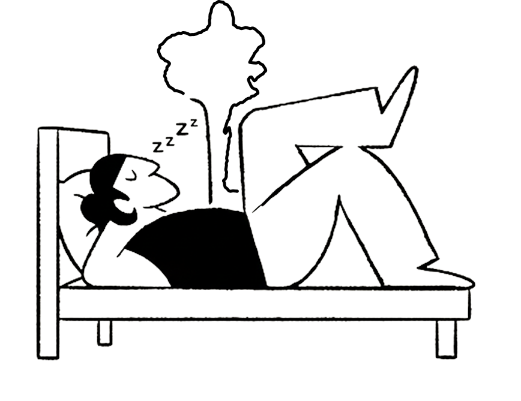
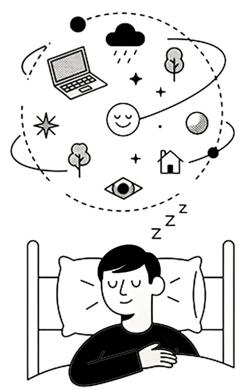
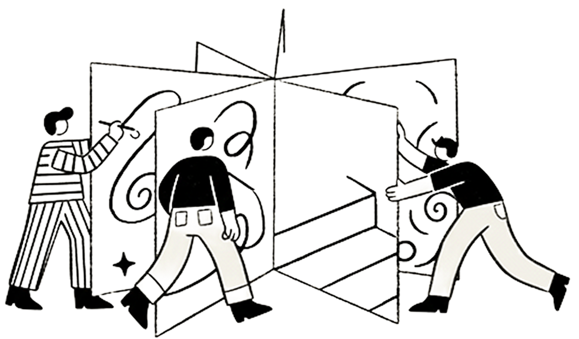

수면은 뇌의 '청소 시간'이다.
- 잠자는 동안 뇌 속 '글림프 시스템(Glymphatic system)'이 활성화되어, 뇌폐물과 독소(예: 알츠하이머 유발 단백질)를 제거한다.
- 하지만 NREM 단계에서도 느릿한 꿈이 나타나기도 한다.
꿈은 대부분 REM 수면(빠른 안구 운동 단계)에서 일어난다.
- 평균 80세까지 산다면 약 26년을 잠자는 데 쓴다.
사람은 인생의 약 1/3을 잠으로 보낸다.
Human Physiology and Sleep

- 실제로 20세기 중반 연구에서 TV 시청 방식이 꿈 색채에 영향을 준다는 결과가 있었다.
흑백 TV 세대는 흑백으로 꿈을 꾸는 경우가 많다.
- 깬 뒤 5분만 지나도 50% 이상을 잊는다.
꿈은 대부분 곧 잊힌다.
- 특정 훈련으로 꿈속에서 자각을 유지하고 꿈을 조종할 수 있다. 꿈속에서 ‘지금 꿈이야’ 인식하면, 뇌파가 현실과 비슷한 패턴으로 변한다.
루시드 드림(자각몽)은 과학적으로 가능하다.
Interesting facts about dreams

모든 사람이 '8시간 수면'이 필요한 것은 아니다.
- 유전적으로 4~5시간만 자도 충분한 '짧은 수면자'가 있다.
- 하지만 이 유전자를 가진 사람은 전 세계 인구의 약 1% 미만이다.
나이 들수록 깊은 잠(REM 전 단계)이 줄어든다.
- 특히 60세 이후엔 '잠도 덜 자는 느낌'을 받게 된다.
낮잠 20분은 '미니 리셋' 효과
- 20분 이내의 낮잠은 기억력, 집중력을 높이고, 30분 이상 자면 오히려 깊은 수면 진입으로 인해 '기상 후 멍함'이 생긴다.
Diversity of Sleep Patterns